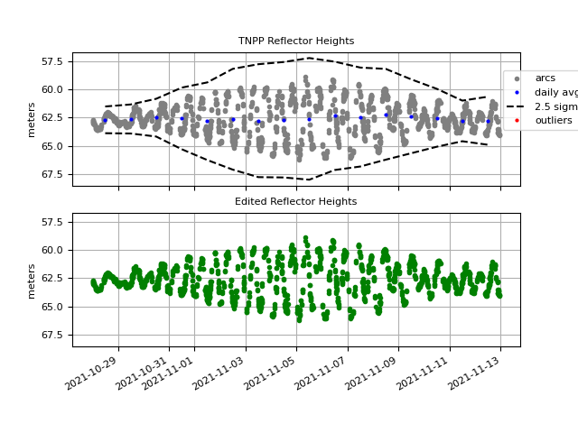
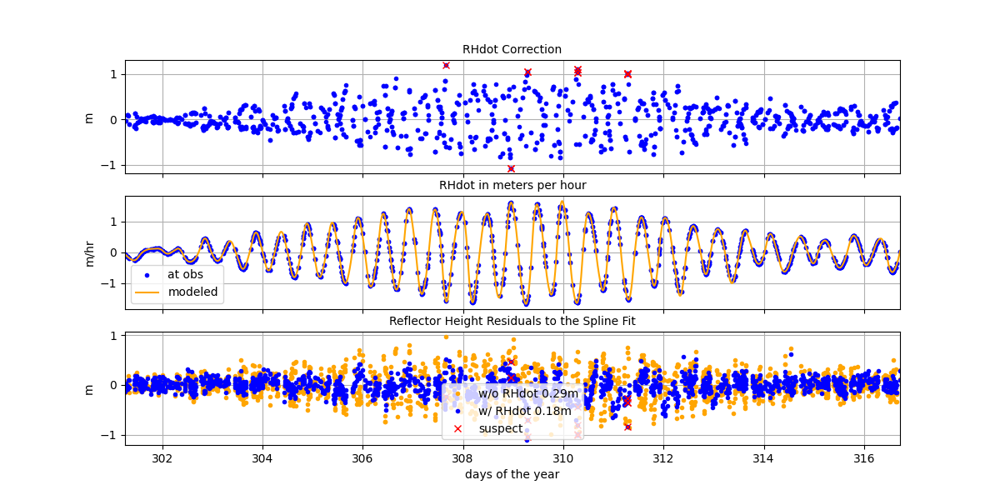
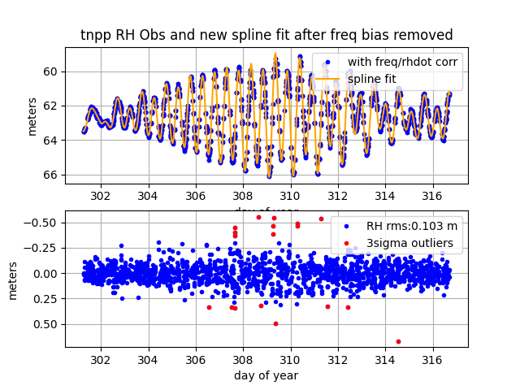

Puerto Penasco, Sonora, Mexico
Station Name: tnpp

Archive: UNAVCO
Ellipsoidal Coordinates:
Latitude: 31.33552
Longitude: -113.63164
Height: 27.640 m
Height above sea level: 62.766 m
This is a high-rate site. There are multi-GNSS data including L2C starting on 2021 Oct 27. I will look at a small dataset from late 2021.
Use the reflection zone app to think about RH and azimuth constraints
Make SNR Files
Let’s start with one file. We are using the high-rate (1 second) data but are decimating it to 2 seconds to make the code run faster. (my result plots below use the 1 second datastream, but you won’t be able to tell the difference):
rinex2snr tnpp 2021 301 -archive unavco -rate high -dec 2 -orb gnss
To get started :
quickLook tnpp 2021 301 -fr 20 -e1 5 -e2 10 -h1 50 -h2 70
{kind=link}
The periodograms show the tides in the southwest quadrant. That is further demonstrated in the summary plot:

Set your analysis strategy (with some variations):
make_json_input tnpp 0 0 0 -e1 5 -e2 12 -h1 55 -h2 70 -ampl 0
Hand-edit the json file to only look at the azimuth region from 180 to 270 degrees.
Now go back and make more SNR files:
rinex2snr tnpp 2021 301 -archive unavco -rate high -dec 2 -orb gnss -doy_end 316
Estimate RH :
gnssir tnpp 2021 301 -doy_end 316
Look at the sea level results for multiple weeks:
subdaily tnpp 2021
Number of measurements for each constellation:

Azimuth vs. constellation, amplitude, and peak2noise:

Initial RH values:
{kind=link}
Setting the -rhdot flag:
subdaily tnpp 2021 -rhdot T
Estimating and applying the RH dot correction improves RH precision (Larson et al., 2013).
{kind=link}
Final series with antenna frequency biases removed compared to a spline fit:
{kind=link}
The final precision for this site is 0.1 meters
Kristine Larson 2022 August 29